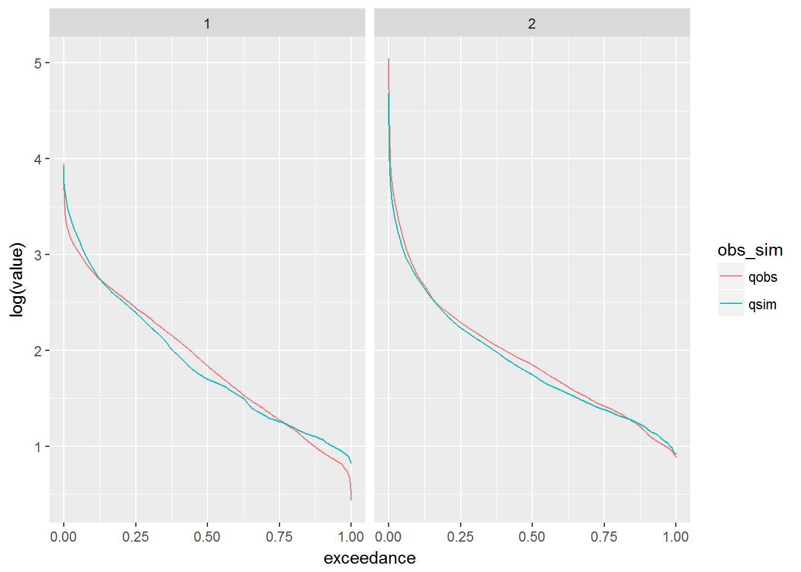

Chapter 6 Flow Duration Curves
Flow-duration curves represent the relationship between the magnitue and the frequency of a streamflow. They provide an estimate of the percentage of time a given streamflow was exceeded within the evaluated time frame. Foster [1934] attributes the first use of flow duration curves to Clemens Herschel around 1880. Since they have been used for a wide array of applications. visCOS provides a function to compute the data for flow-duration curves and a function to plot them directly. The former function is called fdc_compute. It computes the flow exceedance properties and returns a data.frame. The calculations are adapted from the method used within the hydroTSM package. It is currently rather slow. The plot-function is called fdc_plot. Internally it uses fdc_compute for the data preparation and generates a facetted ggplot object from it. In the plot each basin is a facet and each sub-plot shows the \(o\)-data and \(s\)-data (see: Introduction).
6.1 Example
Flow duration curves can be plotted in visCOS in the following way:
library(visCOS)
cos_data <- get_viscos_example()
fdc_plot(cos_data)
6.2 Code
6.2.1 Computing the data for the flow duration curves
#' Compute Flow Duration Curves
#'
#' Computes the flow duration curves (fdc) for the `cos_data` data.frame.
#' The calculations are adapted from the method used within the hydroTSM package.
#' @param cos_data A data.frame with columns as used throughout visCOS
#' @import magrittr
#' @import dplyr
#' @importFrom purrr map_df
#' @import pasta
#' @export
fdc_compute <- function(cos_data) {
# defensive code:
assert_dataframe(cos_data)
# def:
order_bound_data <- function(bound_data) {
ordred_fdc_data <- bound_data %>%
mutate(obs_sim = key %>%
gsub( viscos_options("name_o") %&% ".*",
viscos_options("name_o"),
.,
ignore.case = TRUE ) %>%
gsub( viscos_options("name_s") %&% ".*",
viscos_options("name_s"),
.,
ignore.case = TRUE ),
basin_idx = key %>%
gsub(viscos_options("name_o"),"",.,ignore.case = TRUE) %>%
gsub(viscos_options("name_s"),"",.,ignore.case = TRUE) %>%
gsub("\\D","",.) %>% as.numeric)
return(ordred_fdc_data)
}
# computation:
cos_data_only <- cos_data %>%
select(starts_with(viscos_options("name_o")), starts_with(viscos_options("name_s")))
exceedance_values <- map_df(cos_data_only,calc_percent_exceedance) %>%
tidyr::gather() %>%
magrittr::extract("value")
fdc_data <- cos_data_only %>%
tidyr::gather() %>%
cbind.data.frame(exceedance = exceedance_values) %>%
magrittr::set_names(c("key","value","exceedance")) %>%
order_bound_data(.)
return(fdc_data)
}# function to calculated the percent exceedance (x-axis) for the fdc
calc_percent_exceedance <- function(q) {
q_sorted <- sort(q)
q_zero_index <- which(q_sorted == 0)
nzeros <- length(q_zero_index)
ind <- match(q, q_sorted)
n <- length(q)
percent_exeedence <- rep(NA, n)
percent_exeedence[1:n] <- sapply(1:n, function(j, y) {percent_exeedence[j] <- length(which(y >= y[j]))},
y = q)
percent_exeedence <- percent_exeedence/n
return(percent_exeedence)
}6.2.2 Plotting the Flow duration curves
#' Plot Flow Duration Curves
#'
#' Plots the flow duration curves (fdc) for `cos_data`.
#' The function uses `ggplot` to so and facets the different basins into
#' separate subplots. Each subplot shows the fdc of the \eqn{o}-data and
#' the \eqn{s}-data.
#' @export
#' @import ggplot2
fdc_plot <- function(cos_data,
log_y = TRUE,
log_x = FALSE,
...) {
# def:
# maybe we have to account certain limits for the logs, e.g:
# if (log_y | log_x & min(ylim) == 0) {
# ylim <- range(q, na.rm = TRUE)
# tmp <- unlist(q)
# tmp[which(tmp == 0)] <- NA
# ylim[1] <- min(tmp, na.rm = TRUE)
# }
logfun <- function(data,take_log){
if(take_log){
return(log(data))
} else (
return(data)
)
}
# computation:
fdc_data <- fdc_compute(cos_data)
gplot <- ggplot(fdc_data) +
geom_line(aes(x = logfun(exceedance,log_x), y = logfun(value,log_y), color = obs_sim)) +
facet_wrap(~ basin_idx)
return(gplot)
}6.3 References
- Foster, H.A. (1934): Duration curves. ASCE Trans., 99, 1213-1267
- Vogel, R. M.; Fennessy, N. M. (1994): Flow-Duration Curves. I: New Interpretation and Confidence Intervals. JWRMD 120, No. 4